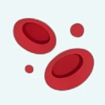
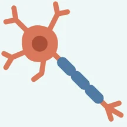
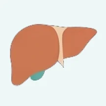
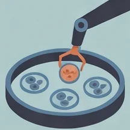
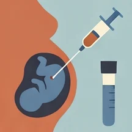
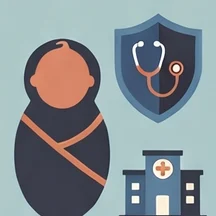

Know before you grow.
Healthy parents can have a child with a serious inherited condition. RheaStrandsTM expanded carrier screening shows whether you are at risk as a couple, so you can make informed choices about your family.
couples screened in a Singapore programme were found to be at risk of having a child with a serious recessive condition.1
What is carrier screening?
We each have two copies of most genes, one from each parent. A carrier has a change in one copy of a gene linked to a condition. The other copy works normally, so carriers are usually healthy and do not know they are carriers.
If both partners carry a change in the same gene, each pregnancy has a 1 in 4 chance of a child who is affected by the condition. Carrier screening looks for these changes before pregnancy, when couples have the most time to think about their options.
Most families with an affected child have no family history of the condition, which is why screening is offered to couples whether or not a condition runs in the family.2
Traditional carrier screening checks for a few conditions chosen by ethnicity or family history. In Singapore, for example, all pregnant women are checked for thalassaemia. Expanded carrier screening uses next-generation sequencing to test for many severe conditions at once, whatever your ancestry.
- 1 in 4
unaffected - 1 in 4
carrier - 1 in 4
carrier - 1 in 4
affected
The chances are the same for every pregnancy.
What the panels cover
RheaStrandsTM is Rhea Health's expanded carrier screening test. It is available as two panels, both focused on severe recessive conditions that start in early childhood, chosen for their relevance to people of Chinese, Malay, Indian and other Asian ancestries.1, 3, 5 Your healthcare provider can help you decide which panel suits you.
A focused panel of 10 severe recessive conditions.
A broader panel of 110 severe recessive conditions.
Examples of conditions screened on both panels

A blood disorder. About 1 in 22 Singaporeans are carriers.4

Affects the nerves that control muscles. About 1 in 50 are carriers.3

Affects the liver and metabolism. About 1 in 44 Chinese are carriers.3
Some conditions on the panels can be treated, and outcomes are often better when treatment starts early. Others cannot yet be treated. Your healthcare provider can explain what this means for any result you receive.
How it works
- STEP 1Pre-test genetic counselling
Your healthcare provider explains what the test covers and what it cannot tell you, so you can decide whether it is right for you.
- STEP 2Blood test or cheek swab
You can be tested on your own or together as a couple. Your sample is tested at an MOH-licensed laboratory in Singapore, and results are ready within 4 weeks.
- STEP 3Post-test genetic counselling
Your healthcare provider goes through your results with you and explains any next steps.
If you are both carriers
Knowing early gives you time to consider your options with your healthcare provider. Each option is a personal choice, and some couples choose none of them.

Embryos are tested for the condition before transfer. Confirmatory testing in pregnancy is still offered.

Chorionic villus sampling or amniocentesis to test the pregnancy.
From a person who is not a carrier of the same condition.

Arranging specialist care and, where available, early treatment from birth.
What a result can and cannot tell you
- A negative result greatly lowers, but does not remove, the chance of having an affected child. No test detects every variant.
- The panels cover selected conditions only. They do not test for every genetic condition, or for conditions that are not inherited.
- Carrier screening is not a diagnostic test for you or your pregnancy.
- Results can be relevant to your relatives, who may also be carriers. Your healthcare provider can help you decide whether and how to share them.
- Occasionally, a result may have implications for your own health. This will be explained before you test.
The research behind the panels
RheaStrandsTM is optimised for Asian populations.
Its panels are based on peer-reviewed research on the genomes of Singaporeans and on a carrier screening programme in Singapore, listed below.
- Bylstra Y, et al. Implementing reproductive carrier screening to include diverse Asian populations: insights from Singapore. BMC Medicine, 2026.
- Mayo Clinic Health System. Carrier screening for family planning, 2023.
- Chan SH, et al. Analysis of clinically relevant variants from ancestrally diverse Asian genomes. Nature Communications, 2022.
- Health Promotion Board. Thalassaemia.
- Expanding carrier screening: beyond the genes, to include underrepresented ancestries. npj Genomic Medicine, 2025.
- Ministry of Health. Moratorium on Genetic Testing and Insurance, updated November 2025.
Frequently asked questions
When should we be screened?
Ideally before pregnancy, so that you have time to consider all your options. Screening is also possible in early pregnancy.
Do both partners need to be tested?
Testing both partners is preferred, because the test is designed to look at your combined risk as a couple. It is fine for one partner to be tested first. Your healthcare provider can advise which approach suits you.
How accurate is the test?
The laboratory reports a sensitivity and specificity of >95% for the variants on these panels. No test detects every variant, so a negative result lowers but does not remove the chance of having an affected child.
Who will see my results?
Your results are sent to you and to the healthcare provider who arranged your test. If you are tested as a couple, results are shared between partners only with each person's consent. Your sample and personal data are handled in line with Singapore's Personal Data Protection Act 2012, and your results are not shared with anyone else, including employers, without your written consent.
Under the Moratorium on Genetic Testing and Insurance agreed between MOH and the Life Insurance Association, insurers cannot require you to take a genetic test, and cannot ask for or use carrier screening results when you apply for insurance.6
How to get tested
RheaStrandsTM starts with pre-test genetic counselling, so the first step is a conversation.
Ask your doctor or healthcare provider whether RheaStrandsTM expanded carrier screening is right for you. They can arrange pre-test genetic counselling and testing.
For questions about RheaStrandsTM, email enquiries@myrheahealth.com.